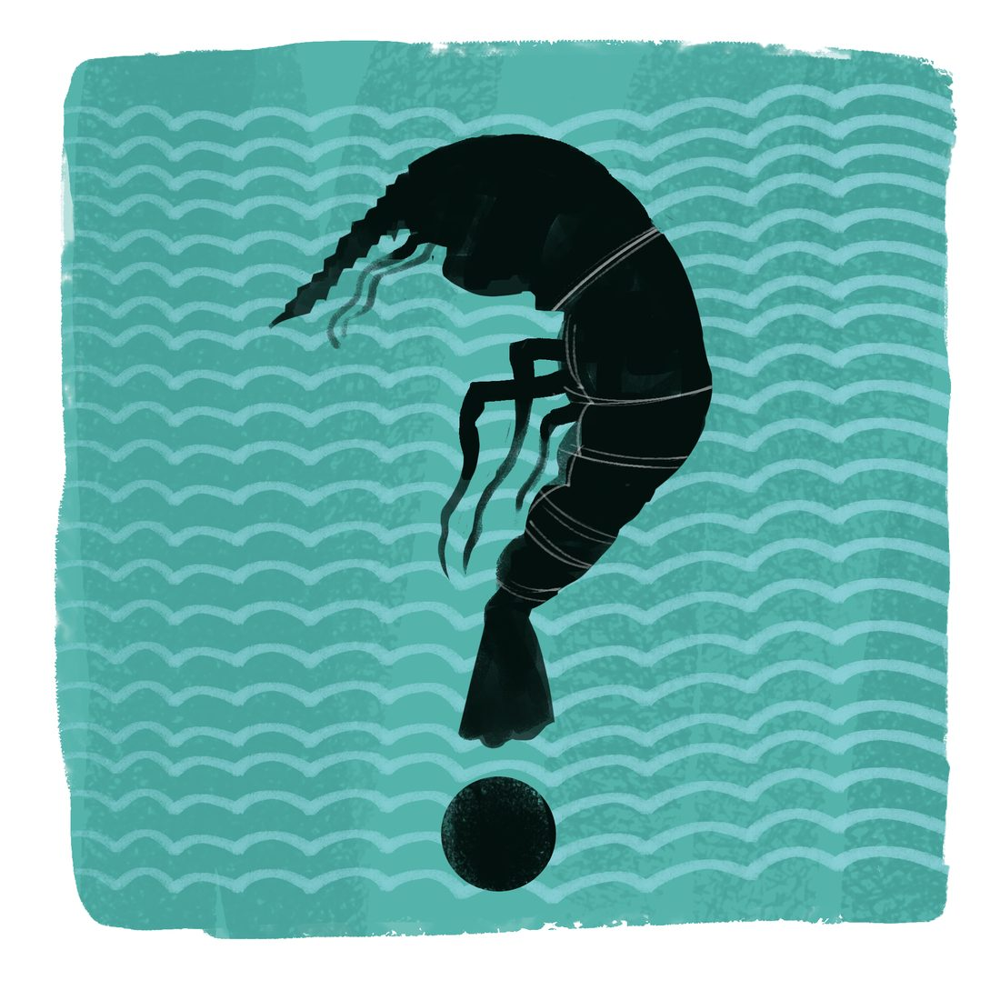
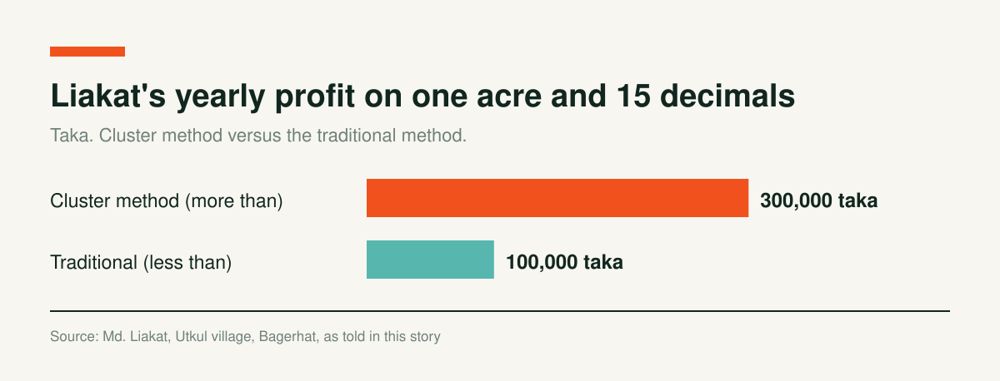
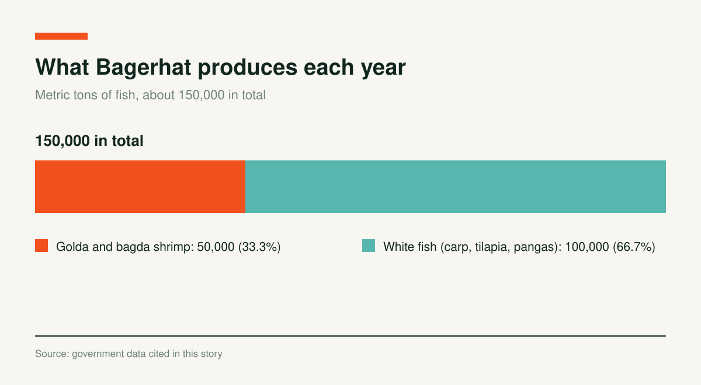

Shrimp Farmers Hit by Climate Change Find Hope in the Cluster Method

For two decades Md. Liakat of Utkul village in Bagerhat Sadar Upazila farmed shrimp successfully. But since about 2007 and 2008, climate change has brought frequent floods, storms and storm surges, disease, and falling groundwater levels, and he could no longer make much profit. Flood currents washed fish out of his enclosure, and sometimes the enclosure's embankment broke. In summer the water dried up and fish died, and disease was constant.
To get through this crisis, Liakat began farming with the cluster method a few years ago. In Utkul village, 25 farmers have come together to farm shrimp and carp using the cluster method. This year Liakat made a profit of more than 300,000 taka from one acre and 15 decimals of land. He says he could not have earned even 100,000 taka a year from this land with the traditional method. As well as profit from fish, he earns a good deal from vegetables grown on the enclosure's embankment.

Fish farmer Nasima Begum of the Shreeghat area says: "Earlier, in the cold months of Poush, Magh and Falgun, the water drained out and the fish in the enclosure died. But since the cluster method deepened the enclosure, I can farm shrimp and other fish all year and profit well."
Like Liakat and Nasima of Bagerhat, shrimp farmers in the southwestern districts of Khulna, Satkhira, Jashore and Gopalganj are now emerging from the climate crisis and seeing profit.
In the cluster method, the Department of Fisheries brought together farmers like Liakat, prepared enclosures of the same type, provided the same type of fry and feed, and taught modern fish farming methods.
In this method the soil is dug to make the enclosure 4 to 5 feet deep, and the embankments are made high, strong and wide so that water does not seep from one enclosure to another. The bottom of the enclosure is kept level. The enclosure is surrounded by net to keep out unwanted animals. Farmers and workers disinfect their hands and feet before they enter. Before stocking fry, the enclosure must be disinfected with bleaching powder, and lime and probiotics must be applied. Four to five shrimp fry can be released per square meter, and feed must contain at least 35 percent protein.
With this method, at least three crops of bagda (tiger shrimp) and two of golda (giant freshwater prawn) are produced each year, with carp as an extra. Production is 800 to 1,000 kilograms of bagda per hectare, against 100 to 300 kilograms with the traditional method.
Government data show that Bagerhat alone produces about 150,000 metric tons of fish a year. Of this, 50,000 metric tons are golda and bagda shrimp and about 100,000 metric tons are white fish such as carp, tilapia and pangas. Bagerhat produces 32 percent of the country's shrimp.

Beyond the cluster farmers who received government grants, many farmers in Bagerhat, Khulna and Satkhira are now inspired to farm fish by cluster rules.
To spread Good Aquaculture Practices among marginal farmers, the Department of Fisheries advises farmers to adopt the cluster method through the Sustainable Coastal and Marine Fisheries Project. Under the project, about 7,500 farmers in Bagerhat, Khulna, Satkhira, Jashore and Gopalganj received training and financial support through 297 clusters. Farmers say production has risen by one and a half to five times.
Source: Sustainable Coastal and Marine Fisheries Project and Department of Fisheries, as given in this story
Md. Shahidul Islam, head and chief scientific officer of the Bagerhat Shrimp Research Station, says: "In the future, cluster farming will help reduce fish mortality and help farmers adapt to changing weather and climate."
A.S.M. Russel, Bagerhat District Fisheries Officer, says climate change was hurting the district's shrimp farmers in many ways. Fry survival was falling, and floods washed fish away, so farmers lost money. With the cluster method developed by the Department of Fisheries, farmers see hope. Better fry, better feed and changes to enclosure infrastructure bring them profit.
A World Bank team worked closely with the Department of Fisheries on this project. At various times they advised farmers and fisheries officers on the enclosure environment and on producing disease-free fish.
Speaking to farmers at a recent meeting in Utkul, Bagerhat, a World Bank representative, senior environmental specialist and project team leader, said: "The Department of Fisheries project has brought remarkable success for farmers. They have learned to produce healthy, disease-free shrimp. They have also adopted ways to keep their enclosures disinfected. Their work has impressed me."
Saroj Kumar Mistri, deputy project director of the Sustainable Coastal and Marine Fisheries Project, says: "With the cluster method we tried to change the traditional practices of fish farming. Farmers have now started Good Aquaculture Practice. Many farmers are now making a profit and offsetting climate losses. If we can spread this widely, fish production will rise and farmers will become financially self-reliant."
Maruf Sheikh of Charkathi village in Kachua Upazila says many farmers in Kakarbil village have profited by making enclosures with the cluster method. "Hearing from them, I deepened my enclosure and widened the embankment. I hope I can stock more fry this time and make more profit than before."
Charts and interactives by Coastal Voices. All figures come from the reporting above.